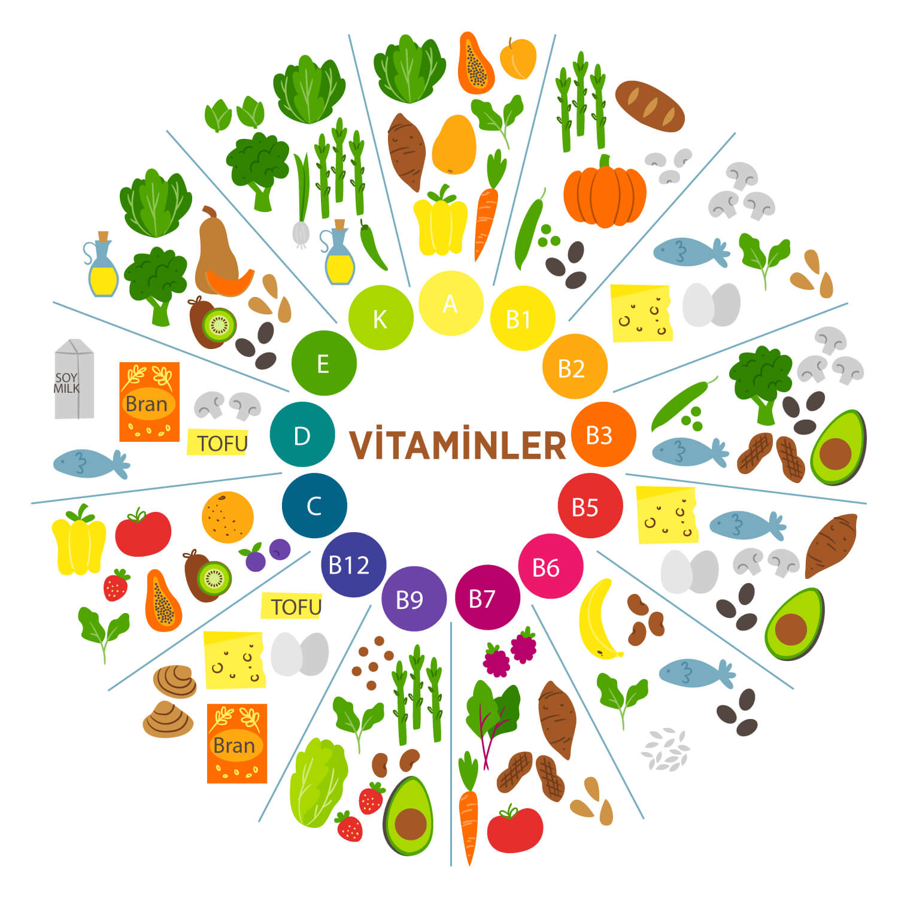

Vitamin Nedir?
Vitaminler doğal besin kaynaklarında bulunan, hücre yenilenmesine ve enerji üretimine yardımcı olan, vücudun belli miktarlarda ihtiyaç duyduğu, bu miktarın sağlanamadığı durumlarda ise dışarıdan takviye edilmesi gereken, vücutta farklı tepkimelerde düzenleyici olarak görev alan bileşiklerdir. İnsan vücudu ihtiyaç duyduğu tüm vitaminleri üretememektedir. Dışarıdan alınması gereken bu vitaminleri, ek vitamin takviyesi şeklinde alınabilir.
Vitaminler, yapılarına göre suda ve yağda çözünenler olarak ikiye ayrılır. Suda çözünen B ve C grubu vitaminler vücudun ihtiyacından fazla miktarda alındığında, artan miktar genellikle vücutta depolanmaz, idrar ile atılır. Bu nedenle, bu tür vitaminlerin düzenli olarak alınması gerekmektedir. Yağda çözünen vitaminler ise, vücutta daha kolay depolanabilmektedir. Bu nedenle, suda çözünen vitaminlerin yağda çözünen vitaminlere göre daha sık tüketilmesi gerekebilir.
Vitaminler hangi sıklıkla alınmalıdır?
Vitaminleri istediğiniz kadar alabilirsiniz yargısı yanlıştır. Vücudunuzun ihtiyacından fazla dozda vitamin kullanımı önerilmemektedir
Fazla alınan A vitamini mide bulantısı, kusma, cilt kuruluğu ve karaciğer hasarına neden olabilir. Mukoza ve ciltte kurulukta bu semptomlar arasındadır.
Çok fazla D vitamini alımı karın ağrısı, sık idrara çıkma, su ihtiyacında artış, kas güçsüzlüğü ve ağrısı, baş ağrısına neden olabilir.
Vücut A, D, E, K ve Demir elementini depoladığından, bu bileşenlerin fazlası organ ve dokularda birikip böbrek, karaciğer, kalp gibi organlara zarar verebilir.
Vitaminler, doktorunuz veya sağlık otoriteleri tarafından önerilen miktarlarda alınmalıdır. Doktorunuz önermediği sürece birden fazla vitamin kullanmanız ciddi yan etkilere neden olabilir.
Vitaminler nasıl alınmalıdır?
Vitaminleri kullanmadan önce doktorunuza tüm tıbbi durumunuzu ve alerjilerinizi söylemeniz gerekmektedir çünkü bazı durumlarda vitamin kullanamayabilirsiniz ve sağlık durumunuza göre vitamin alım dozunuzu ayarlamanız gerekebilmektedir. Vitaminleri düzenli ve kontrollü kullanmanız aldığınız verimi artırabilir.
Tablet ve kapsül şeklindeki vitaminlerinizi bir bardak su ile alabilirsiniz, çiğneyerek veya yutarak kullanılmamalıdır. Dil altı tabletlerinizi de dilinizin altına yerleştirerek çözünmesini bekleyebilirsiniz, tabletleri çiğnemeyin ve yutmayın. Sıvı ilaçlar içinse verilen doz ayarlı şırınga, özel bir doz ölçme kaşığı veya ilaç kabı ile almanız gereken miktarı ölçüm yaparak tüketebilirsiniz. Doz ölçme cihazınız yoksa, eczacınızdan bir tane isteyebilirsiniz. Son olarak vitaminleri kendi kaplarında saklamayı unutmayınız.
Vitaminlerin faydaları nelerdir?
Günlük alınan vitaminler vücuda birçok fayda sağlamaktadır. Vücudun enerji oluşum metabolizmasına katkıda bulunmak, ruh halini iyileştirmek(1) ve vücutta ihtiyaç duyulan birçok reaksiyonu düzenlemek ve kolaylaştırmak gibi bilinen faydalarının yanı sıra farklı birçok etkisi de vardır. Vitaminler, yaşlanmaya bağlı DNA hasarının azaltılmasına, uyanıklık ve iyi hissetme halinin korunmasına, çeşitli hastalıkların yol açabileceği risklerden korunmaya da yardımcı olabilir.